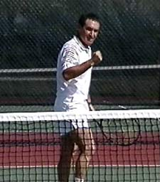
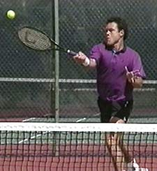

Previous: Winning Matches - Game plan | 🏠 Strategy Home | Next: Winning Matches - The Transition Volley
Winning matches tactics
Comprehensive unified tennis knowledge base — Fundamentals, Stroke Analysis, Reference Library, and more
Winning Matches: Tactics
By Allen Fox, Ph.D.
Hitting crosscourt forehands may pay off even if your forehand is your weaker side.
Identify Strengths and Weaknesses
The player who thinks to win is able to use a wide variety of tactics to win matches against various opponents to suit various circumstances. What I want to outline here is a whole range of possibilities for you to explore, and then to incorporate these into your game plans for various matches.
In general, winning matches hinges on your ability to exploit your opponent's weaknesses, to hide your own weaknesses, and to stay away from your opponent's strengths. Be aware of what you do better and worse than your opponent.
All players have points of weakness and your game plan should revolve around who has the advantage in various match-ups. For example, your forehand may be your weaker side, but hitting crosscourt forehands with your opponent may pay off, because his forehand's weaker than yours. Or you may be an average or even a poor volleyer, but able to win at the net if your opponent's passing shots are his weak point.
If you're a baseliner with a poor volley and losing to a volleyer, it may pay for you to come to the net anyway. Your weak volleys may have the advantage in exchanges with his weak ground strokes.
Almost every player has a weaker side. Even if your opponent's forehand and backhand appear equal, it's highly probable that over the course of a match they will not be. A vital task then is to determine which side is the weak side, and if possible to do it in the warm-up.
A vital task in devising tactics-identifying the weaker side, even if they may appear equal.
There are certain clues which often give away the weak side. For example, a stroke that has a late back swing or a particularly awkward appearance, a stroke that produces a lot of miss hits or errors with wide margins, or a stroke that is hit primarily with the arm as opposed to the shoulders and legs.
Once you've identified it, the weakness becomes your point of attack. How to exploit it depends on how weak it is. If it's much weaker than the stronger side, you can play it almost exclusively. Your goal is to break it down over time. This in turn will erode your opponent's confidence in the remaining parts of his game. If it's played relentlessly, a severe weakness will usually get worse as the match progresses.
The more important the point, the more you should play to the weakness. It's most likely to break down in a pressure situation. The strength is more likely to hold. Even if the weaker side is not substantially worse it should still be attacked on bigger points.
Sometimes you can even create a weakness when an opponent seems to have even strokes on both sides. For example, the forehand can sometimes be broken down, even when it looks good early in a match. This is because the forehand is usually more dependent on confidence than the backhand. Hitting a lot of balls to your opponent's forehand can cause a player to question his own shot and lead to a loss of confidence. In effect, you're telling him, I don't think your forehand is very good. Prove to me that I'm wrong. Often your opponent will start thinking about it and start missing.
Attacking your opponent's strength can help you dominate him on a psychological level. It can make him feel weak and increase the chance that he'll lose his resolve at some stage of the match. Another important tactic in the battle of wills, never show your opponent that he's hurt you in any way. If you can project an image of overwhelming force, it can make your opponent feel ineffectual and cause him to press too hard.

Never show your opponent that he has hurt you in anyway. Try to project an image of overwhelming force.
Appear resistant to his best efforts. Even after your opponent hits a winner off one side, go immediately back to the same side again. It's an effective tactic. Don't allow yourself to be intimidated by one great shot. Challenge him to repeat it and to do so on a consistent basis.
Tennis is a game of errors. Because of this, it's important to realize that even if you're an attacking player, you'll win most of your points by forcing your opponent into mistakes. Whenever possible force your opponent to try difficult shots. Your opponent will feel the pressure, and even if he's able to hit some good passing shots, this tactic may pay off with errors on big points later, maybe at critical times in the match.
Another important tactical point: when you have your opponent in trouble, don't let him get out of it by hitting a soft, high, floating return. If he tries this, move forward and volley the next shot from the mid-court area so your opponent does not have time to recover. If you move in and pick off a few of these high shots, he will be forced to try for more when he's in trouble and make more mistakes.
Another general rule: never hit a more difficult shot than necessary to accomplish your objective. In the long run, high percentage players win matches. This doesn't mean you shouldn't take any risks at all. It means you should take only those risks that maximize your probability of winning the point.
Move forward and pick off high floaters, you'll force more mistakes out of your opponents.
Play the Percentages
To be a successful competitor you must learn to evaluate the risk to reward ratios in your shot making and try to adjust them so that the percentages are in your favor over the course of a match.
One way to slant the percentages in your favor is by judicious use of the net. It's good, for example, to serve and volley often enough to keep your opponent in doubt. If you don't come to the net at least occasionally, he has the freedom to hit high, deep, floating returns off your best serves, and these have minimal risk of error.
The possibility that you may serve and volley forces him to hit lower, harder returns and this can produce extra errors. Attacking the net becomes more likely to succeed as the points become more crucial, particularly at higher levels of play.
There's a well-known relationship in tennis between the player's ability to hit shots and his arousal or excitement level. If your arousal level is low, for example if you're half asleep, your performance will be poor. As arousal increases, performance improves until it reaches a peak, after which it starts to fall as arousal becomes too high. You'll play your best when you are moderately excited, but you'll play worse if you're not sufficiently excited or if you're overly excited.
Pressure raises your opponent's arousal level. Early in a match his arousal level may be low and attacking the net may excite him just enough to stimulate some good passing shots.

Judicious use of the net can slant the percentages in your favor.
But later in the match, say 5-all in the third set when he's already under pressure, attacking the net can push his arousal level past the optimum level, so that hitting passing shots becomes very difficult and his performance declines. If you have a problem with choking on big points because you become overly excited, one strategy is to come to the net and give your opponent the chance to choke first.
There are other ways to gain advantages in certain pressure situations. Generally, your opponent will feel more pressure when he's ahead, like when he has a chance to close out the set or the match, or when he has a break point on your serve or an add point on his own serve in an important game.
In these situations, his nerves can cause him to miss easy shots or try something that's tactically foolish because he wants to end the point too quickly. Don't let your opponent off the hook by missing quickly yourself. Play consistent, high-percentage tennis in these situations and test his nerves. Force him to beat you with great shots when he's under pressure.
Another basic tactical decision is how much variety to introduce into your particular strategic style. Some players are most effective when they try to break up their opponent's rhythm. They do this by constantly varying their spins, power, placements and strategies. Arthur Ash and Rod Laver did this. Against this type of player, you feel off balance and have little or no rhythm. On the other hand, the player who uses this style has less continuity and rhythm himself, and so he tends to make a few extra errors also.
Attacking the net becomes more likely to produce errors when playing critical, big points.
The opposite approach is to be very methodical in play patterns. Your opponent knows what you're going to do, but because you have so few decisions to make you will probably be very consistent. Great players like Jack Kramer, Poncho Gonzalez and John Newcombe did this. Their style was to hit a high percentage of first serves in the court, hit deep first volleys, shift consistent low returns, and eliminate unforced errors. They felt that if they were able to execute their game plans well, there was little their opponent could do about it anyway.
The question of evaluating which of this wide range of tactical approaches will produce winning tennis depends on your capabilities. But also to a greater extent than is usually recognized, your personality.
The style of grinding your opponents down with one approach fits a personality type that is risk averse but doesn't mind knocking heads or staying at repetitive tasks for extended periods. The style of constant variety requires a personality more comfortable with risk and a wider range of shot making ability.
In either case, however, you must develop confidence in the physical skills required. Whether you're predominantly a defensive or attacking player and what variety of tactical options you decide to introduce into your game boils down to what makes you feel most comfortable and confident on the court--and most importantly--what gets results.
Read More From Allen!
Visit him at www.allenfoxtennis.net

Winning the Mental Match Dr. Allen Fox
Tennis is mentally the most difficult sport due to it’s personal nature which makes winning and losing feel more important than they are. In this new book, Allen offers his proven solutions to problems such as choking, reducing stress, finishing matches, and developing confidence. Based on a life time of high level play and coaching success, it’s a must for all competitive players.
Click Here to Order.

Winning may not be everything, but Dr. Allen Fox points out that, if we are honest with ourselves, winning is still eminently preferable to losing. In his new book, The Winner's Mind, Allen lays out an original step-by-step plan for succeeding at any of life's endeavors, based on his first hand and very personal observations of the careers of both world-class tennis players and successful businessman.
The bottom line is that even if you are not a born champion--and only a tiny percentage of us are--you can still use the success strategies of champions to tilt the odds in your favor. Writing with brutal honesty and dry humor, Fox lays out the common mental characteristics of winners in sports and in life. He explains the critical role of intellect over emotion. He analyzes the struggle between ambition and fear and the insidious and pervasive fear of failure that undermines so many of us.
He then outline how to confront and overcome these fears in your life and career, even when they are initially subconscious. Must reading from one of the great thinkers in tennis, and a Renaissance Man in life. Click Here to Order.
To purchase this book you can also send a check for $17.95 to Allen Fox, 1120 Inverness Place, San Luis Obispo, CA. 93401. The price includes shipping.

Allen Fox PhD is a former world class player, a coach, a psychologist, and one of the most original and insightful analysts in modern tennis. A top 10 American player from the glory days before Open tennis, Fox played many of the legendary greats, among them Roy Emerson, Rod Laver, Stan Smith, and Arthur Ashe. At Pepperdine he developed the men's tennis program into an elite contender for national titles, and gave Brad Gilbert the insights that became the foundation for "Winning Ugly". His book Think to Win is a modern classic. He has also starred in a series of acclaimed videos, including Pro Secrets of Match Play and Allen Fox's Ultimate Tennis Lesson.
Source: tennisplayer.net archive — Winning Matches - Tactics.docx (John Yandell teaching library, 2002-2022). Extracted and rendered as HTML for Tennis Future Lab.